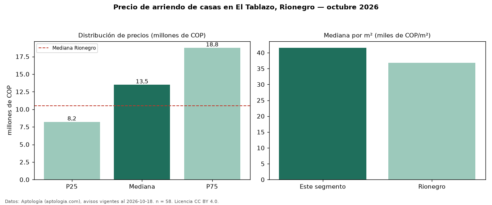

Precio de arriendo de casas en El Tablazo, Rionegro — octubre 2026
En El Tablazo, Rionegro, la mediana de canon mensual de casas es COP 13,50 millones, según 58 avisos vigentes. Eso es 29 % por encima de la mediana de Rionegro para casas (COP 10,50 millones). Por metro cuadrado, la mediana es COP 41.566/m² al mes (n = 44 avisos con área), 13 % por encima de Rionegro (COP 36.784/m²). Con el precio por m² de venta del mismo segmento (COP 8,45 millones/m²), la rentabilidad bruta implícita es 5,9 % anual (aproximación con medianas de ofertas distintas). El área mediana anunciada es 350 m². El segmento con más oferta es el de 3 o más habitaciones (55 avisos, mediana COP 14 millones). La administración mediana declarada es COP 1,00 millones al mes (n = 15), aparte del canon. La mitad central de los avisos va de COP 8,22 millones a COP 18,75 millones (razón 2,3), una dispersión alta. Datos: Aptología (aptologia.com), CC BY 4.0 — https://www.aptologia.com/arriendo/rionegro/el-tablazo. Archivos: PDF, CSV con las cifras y gráfica PNG.

| Avisos únicos | 58 |
|---|---|
| Percentil 25 | COP 8.225.000 |
| Mediana | COP 13.500.000 |
| Percentil 75 | COP 18.750.000 |
| Mediana por m² | COP 41.566 |
Fuente: avisos vigentes de portales inmobiliarios recopilados por Aptología, deduplicados (mínimo 30 avisos únicos por celda). Precios pedidos, no cerrados. Fecha: 2026-10-18.